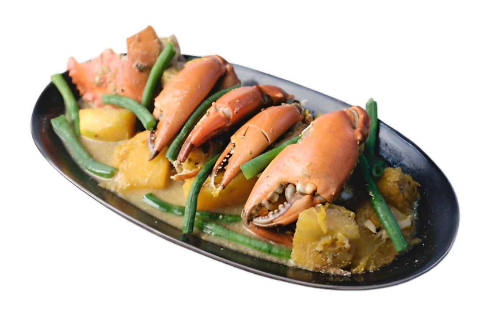
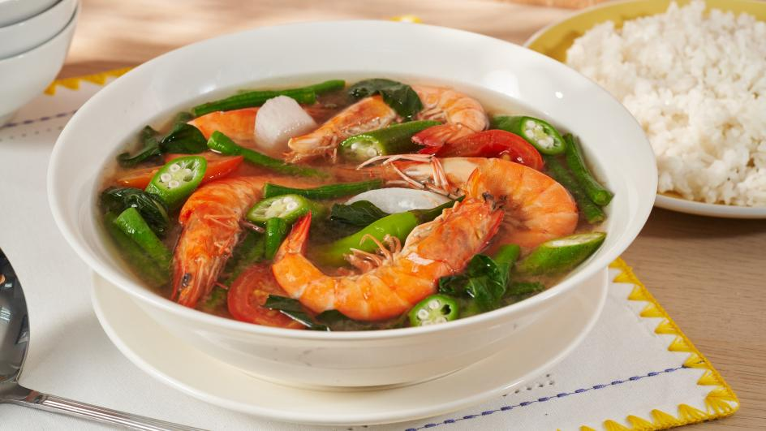

CookingIna
CookingIna

Salted and marinated fried milkfish with a crispy, savory texture.
Fresh tuna marinated in vinegar, calamansi, and spices with a tangy, zesty flavor.
Stuffed milkfish with a savory filling of garlic, onions, tomatoes, and vegetables, then fried to crispy perfection.
Slow-cooked bullet tuna simmered in tangy tamarind and salty dried kamias.
Tangy shrimp soup with tamarind broth and assorted vegetables.

a. 1 medium milkfish, butterflied
b. 1/2 cup vinegar
c. 4 cloves garlic, minced
d. 1 tsp black pepper
e. 1 tsp salt
1. Marinate the milkfish in vinegar, garlic, pepper, and salt for at least 4 hours.
2. Heat oil in a pan and fry the fish until crispy.
3. Drain on paper towels to remove excess oil.
4. Serve with garlic rice and vinegar dipping sauce.

a. 1 lb fresh tuna, cubed
b. 1/2 cup vinegar
c. 1 medium onion, chopped
d. 2 thumb-sized ginger, minced
e. 2 red chilies, sliced
1. Wash the tuna thoroughly and drain well.
2. Combine vinegar, onion, ginger, and chilies in a bowl.
3. Add the tuna to the mixture and mix gently.
4. Let it sit for 10-15 minutes to absorb flavors.
5. Serve chilled as an appetizer.

a. 1 medium milkfish (bangus)
b. 1 medium onion, chopped
c. 2 cloves garlic, minced
d. 1 carrot, diced
e. 1/4 cup raisins
1. Debone the milkfish carefully and set aside the skin.
2. Flake the fish meat and sauté with garlic, onion, carrot, and raisins.
3. Stuff the mixture back into the fish skin.
4. Fry the stuffed milkfish until golden brown.
5. Serve with a side of dipping sauce.

a. 2 medium mackerel tuna (tulingan)
b. 1 cup dried kamias
c. 1/2 cup pork fat, sliced
d. 4 cups water
e. 1 tbsp salt
1. Clean and gut the tulingan, then rub with salt.
2. Layer kamias, pork fat, and fish in a pot.
3. Add water and bring to a boil, then simmer on low heat for 2-3 hours.
4. Add more water if necessary during cooking.
5. Serve with steamed rice and a side of fish sauce.

a. 1 lb shrimp
b. 8 cups water
c. 1 medium tomato, quartered
d. 1 medium onion, quartered
e. 1 packet sinigang mix
1. Boil water in a pot and add tomatoes and onion.
2. Add the sinigang mix and stir well.
3. Add the shrimp and cook until they turn pink.
4. Add vegetables like okra and radish, if desired.
5. Serve hot with steamed rice.